Station 1: Monthly Statement Audit AI Tool
Complex personal account dealing application process. Staff needs to print the form, fill in the information, sign, scan and send to our email box.
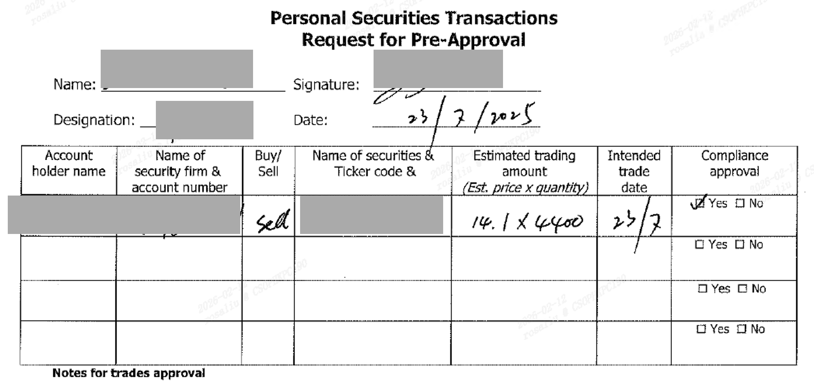
Manually review of 200+ monthly statements per quarter, taking up to 1 month.

Complex statement structures increase the risk of overlooking transactions during review and add unnecessary review burden.
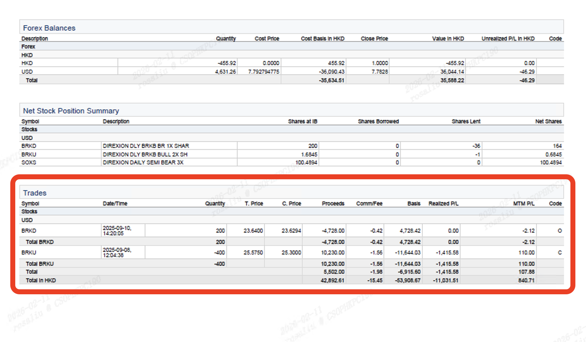
Delayed violation detection and warnings due to high workload.
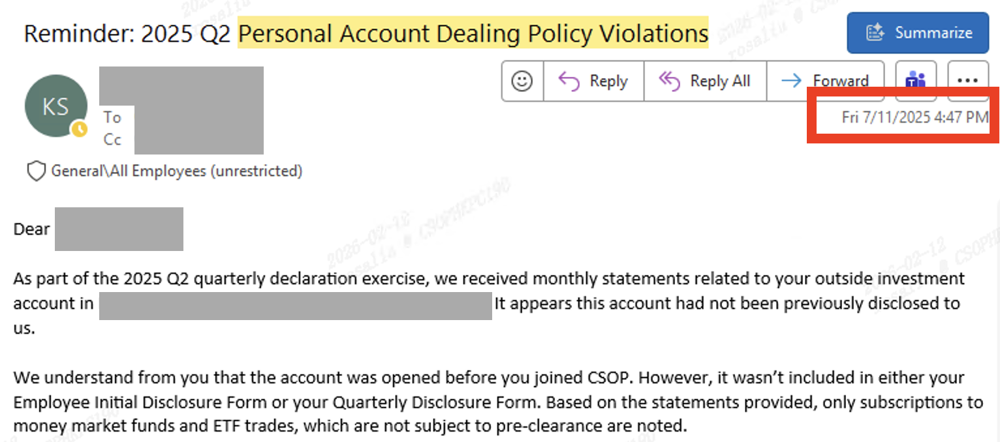
Personal account dealing application can be submitted electronically with a few clicks. Company-wide adoption.
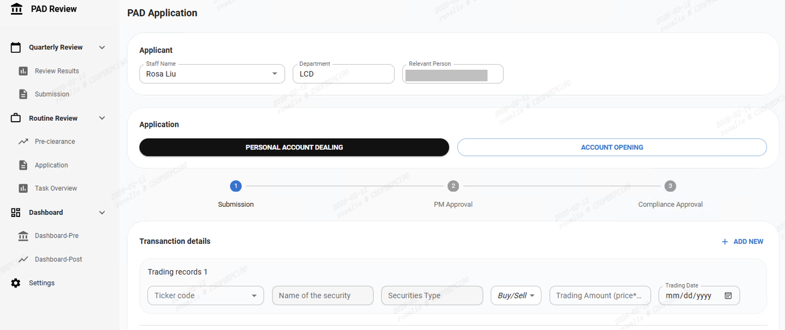
Automatically generate reply emails and provide a task list panel to track application status.
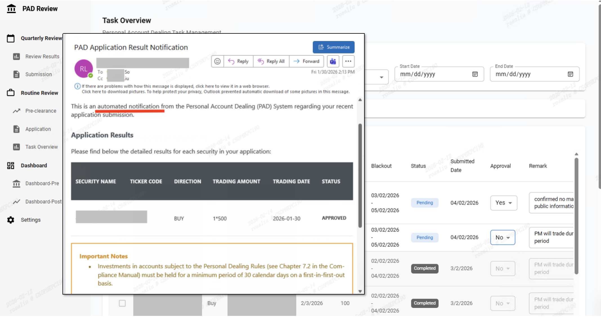
Automated trades information extraction and AI-driven violation detection. Review time reduced from 1 month to 1 week.

Visualization dashboards for identifying suspicious trading patterns.
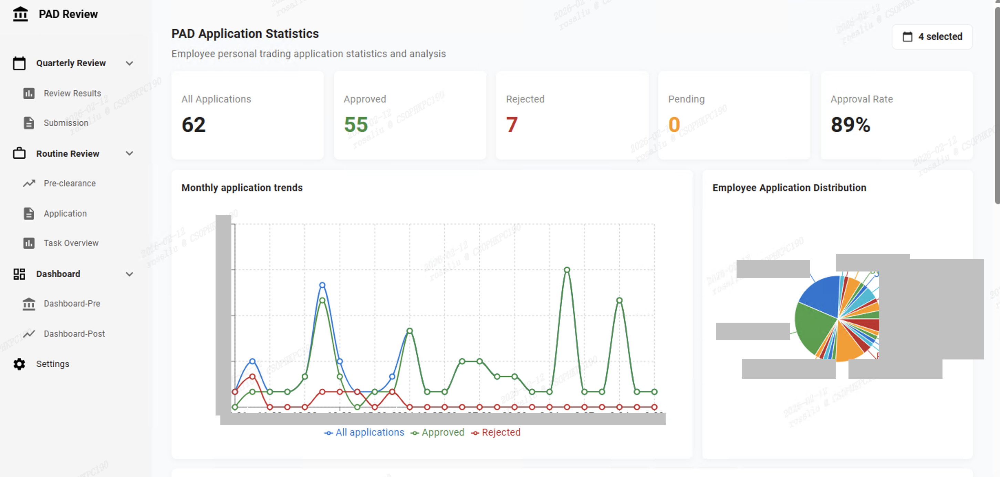
Challenge: Many handwritten scanned documents couldn't be processed directly.
Solution: Collaborate with IT specialists to first use AI to recognize handwritten content, then organize and structure the identified information via automated programs.

Problems that seem unsolvable often reveal solutions through persistent effort. Proactive exploration is the key.
Consulting IT experts led to the AI solution. Recognizing when to seek professional help is crucial alongside independent thinking.
Station 2: Marketing material Review AI Tool
Review 100+ fund monthly newsletters within one week - heavy workload.
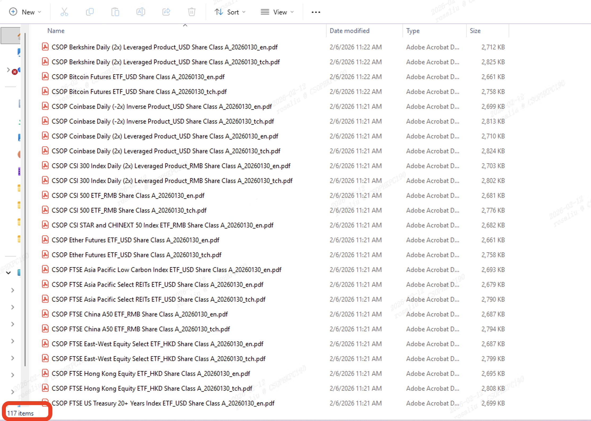
Complex fund reports create risk of missing potential compliance issues.
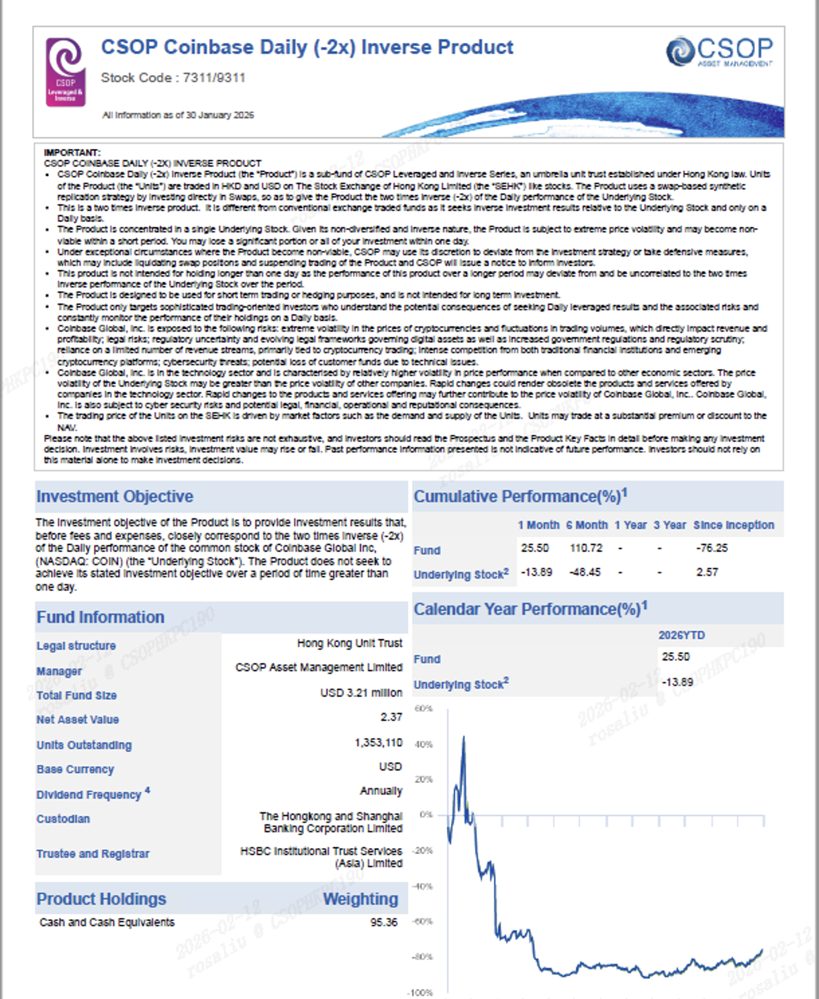
17 regulatory requirements from Securities and Futures Commission easily missed during manual review.
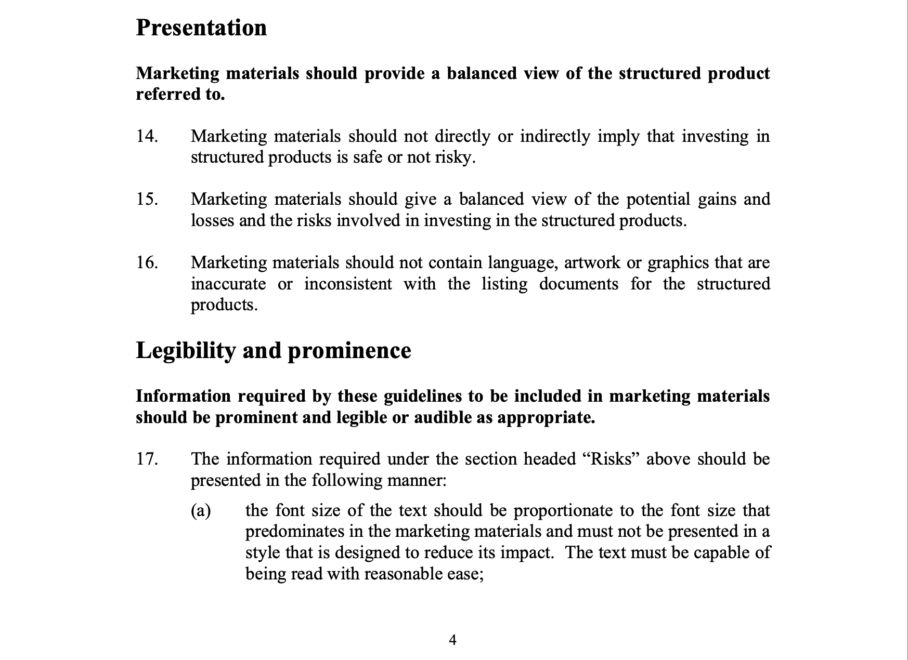
AI reviews documents and provides amendment recommendations, 80% efficiency increase, sustainable rule iteration.
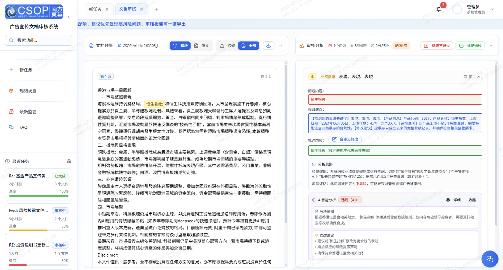
AI integrates Securities and Futures Commission rules, supporting evolving regulations.
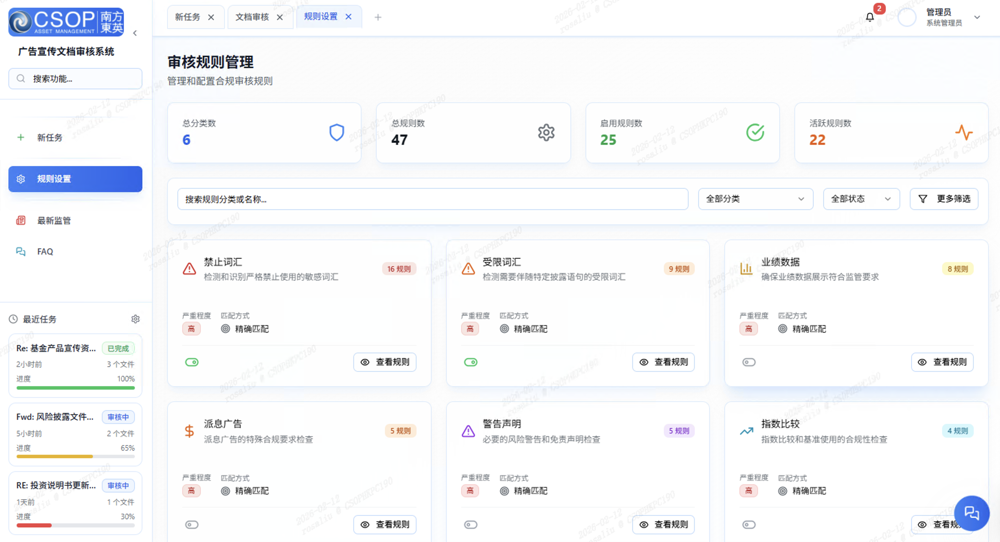
Challenge: Initial low trust in AI tool from other team members.
Solution: Collect feedback via the task panel and conduct system optimization to continuously improve applicability.
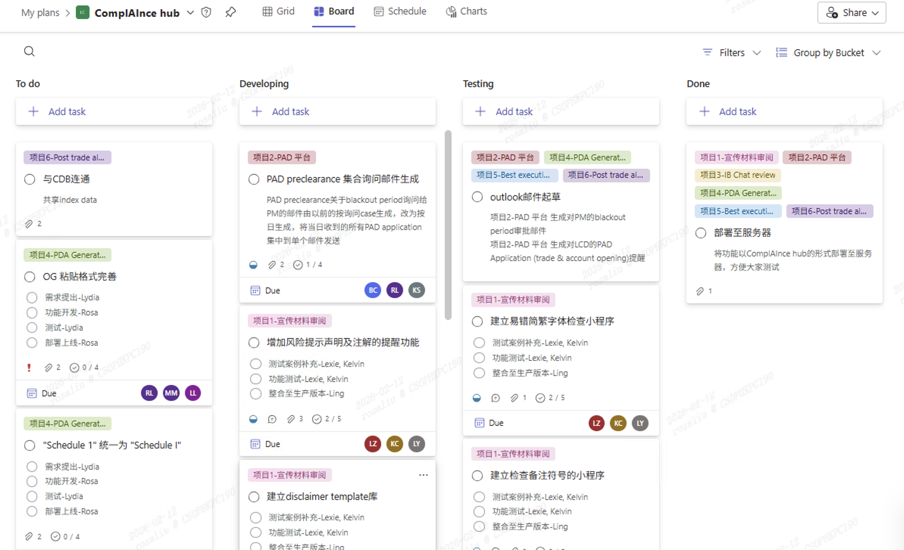
When designing solutions, we need to think dynamically and long-term, and build in sufficient flexibility so that the solution can adapt and evolve over time.
If someone doesn’t act as we expect, there may be hidden difficulties we are unaware of. In such cases, we should communicate proactively and work together to find solutions.
Station 3: Agreement Generation AI Tool
Standardized contract templates are lengthy; drafting a contract takes 30 minutes and carries a risk of typos.
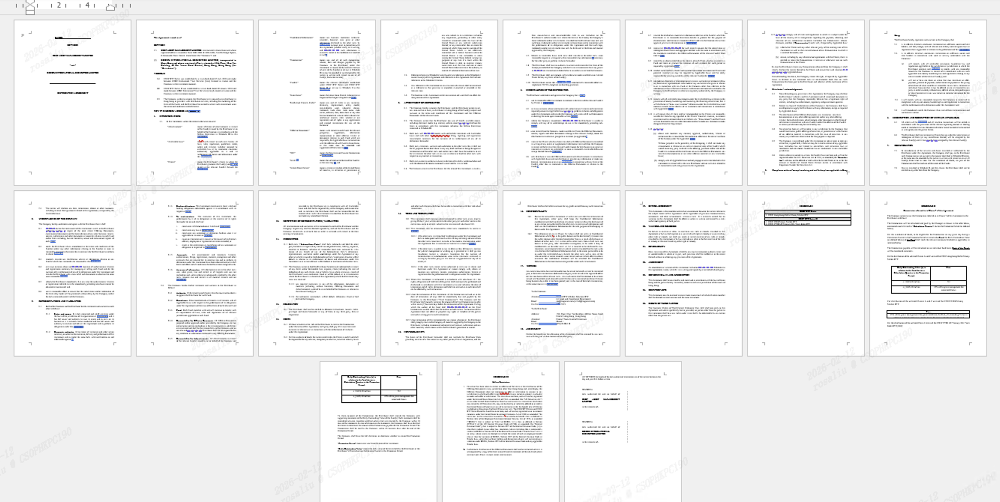
Manual maintenance of contract logs with over 2,000 entries carries risks of omissions and errors in updates.

Standard contracts can be generated in just 3 seconds with a few clicks, eliminating typos entirely.
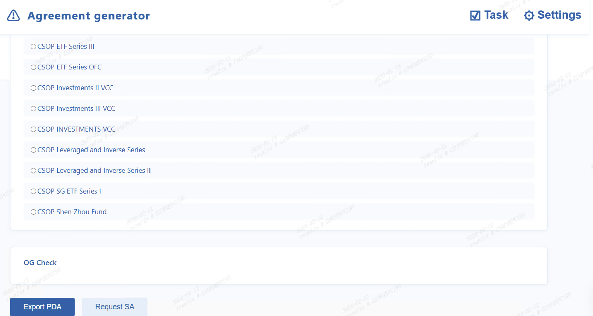
Automatic Agreement tracking eliminates manual log maintenance needs.
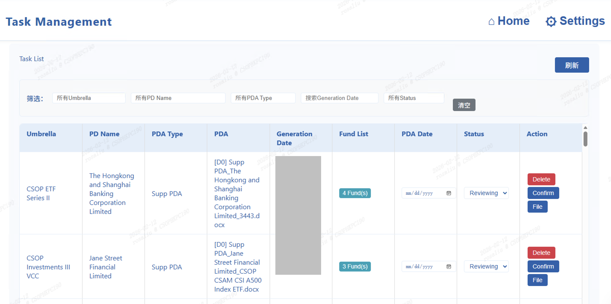
Online Agreement query and sharing improves cross-department communication.
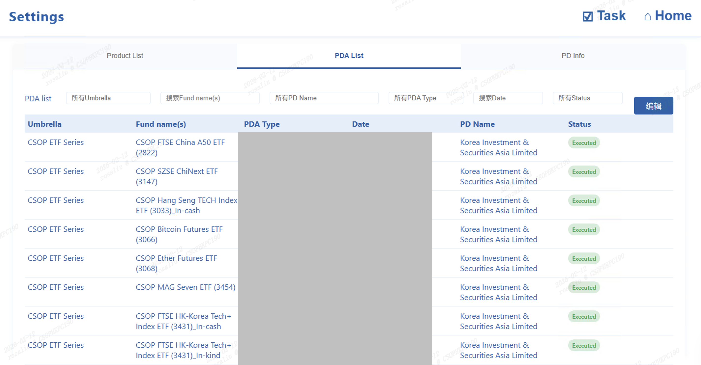
Challenge: Many different agreement templates, inconsistant records across team members. Confusion were caused when the agreement generated is defferent from others' template.
Solutions: Sorted out the template for each scenario and obtain written confirmation from head of the team.
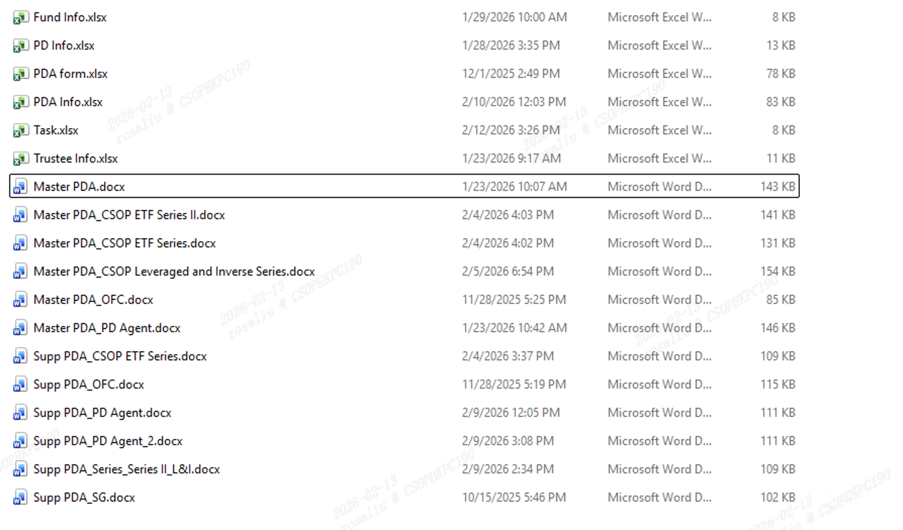
It’s crucial to communicate and verify information with all parties in a timely manner. A single mistake at an early stage can lead to a chain of errors.
Working alone isn’t necessarily a sign of strength or capability. Getting everyone involved—that’s what’s truly impressive.
Filling Station: My takeaways
Learned to mobilize team effort through clear task allocation and motivation, significantly boosting team efficiency.
Developed ability to design solutions for real business problems and apply AI to automate and optimize complex processes.
Persistence through challenges to build reliable tools. Tested single functions 100+ times to achieve product excellence.